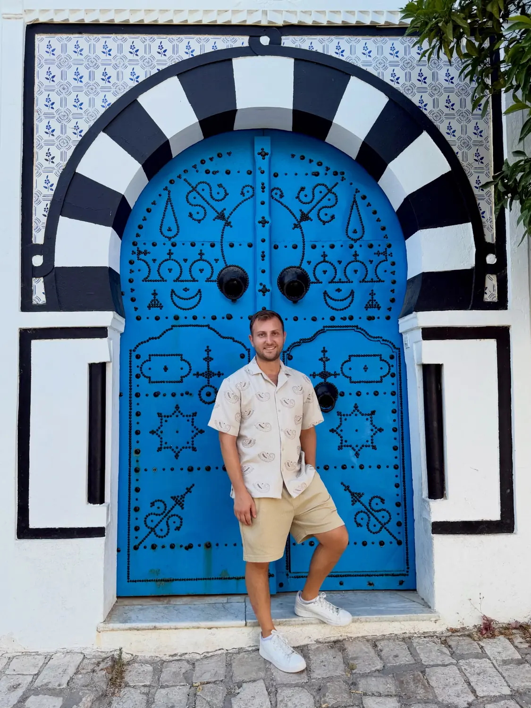
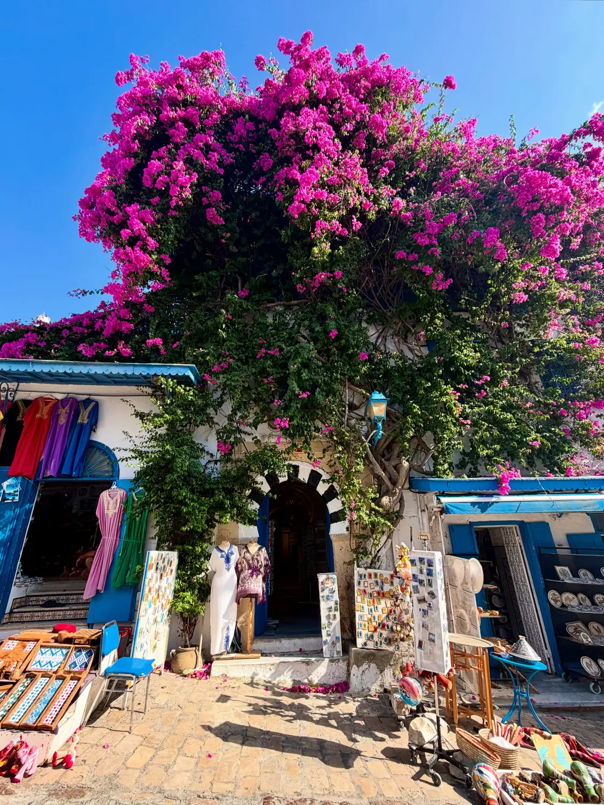

The highlight01
Sidi Bou Said
📍 Sidi Bou Said · on the cliffs north of Tunis
Our favourite place in Tunisia by a mile. A whole hilltop village painted crisp white with cobalt-blue doors, windows and shutters, tumbling with bougainvillea and cobbled lanes that open onto the sea. It's made for wandering — every corner is a photo. Go in the late afternoon as it cools down and the light turns golden, and give yourself time to just get lost in it.
Blue & white everywhereGo late afternoon